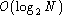

As noted in section 5.11, discrete HMMs can be used to model speech by using a vector quantiser to map continuous density vectors into discrete symbols. A vector quantiser depends on a so-called codebook which defines a set of partitions of the vector space. Each partition is represented by the mean value of the speech vectors belonging to that partition and optionally a variance representing the spread. Each incoming speech vector is then matched with each partition and assigned the index corresponding to the partition which is closest using a Mahanalobis distance metric.
In HTK such a codebook can be built using the tool HQUANT. This tool takes as input a set of continuous speech vectors, clusters them and uses the centroid and optionally the variance of each cluster to define the partitions. HQUANT can build both linear and tree structured codebooks. To build a linear codebook, all training vectors are initially placed in one cluster and the mean calculated. The mean is then perturbed to give two means and the training vectors are partitioned according to which mean is nearest to them. The means are then recalculated and the data is repartitioned. At each cycle, the total distortion (i.e. total distance between the cluster members and the mean) is recorded and repartitioning continues until there is no significant reduction in distortion. The whole process then repeats by perturbing the mean of the cluster with the highest distortion. This continues until the required number of clusters have been found.
Since all training vectors are reallocated at every cycle, this is an expensive algorithm to compute. The maximum number of iterations within any single cluster increment can be limited using the configuration variable MAXCLUSTITER and although this can speed-up the computation significantly, the overall training process is still computationally expensive. Once built, vector quantisation is performed by scanning all codebook entries and finding the nearest entry. Thus, if a large codebook is used, the run-time VQ look-up operation can also be expensive.
As an alternative to building a linear codebook, a tree-structured codebook can be used. The algorithm for this is essentially the same as above except that every cluster is split at each stage so that the first cluster is split into two, they are split into four and so on. At each stage, the means are recorded so that when using the codebook for vector quantising a fast binary search can be used to find the appropriate leaf cluster. Tree-structured codebooks are much faster to build since there is no repeated reallocation of vectors and much faster in use since only  distance need to be computed where N is the size of the codebook. Unfortunately, however, tree-structured codebooks will normally incur higher VQ distortion for a given codebook size.
When delta and acceleration coefficients are used, it is usually best to split the data into multiple streams (see section 5.10. In this case, a separate codebook is built for each stream.
As an example, the following invocation of HQUANT would generate a linear codebook in the file linvq using the data stored in the files listed in vq.scp.
HQuant -C config -s 4 -n 3 64 -n 4 16 -S vq.scp linvqHere the configuration file config specifies the TARGETKIND as being MFCC_E_D_A i.e. static coefficients plus deltas plus accelerations plus energy. The -s options requests that this parameterisation be split into 4 separate streams. By default, each individual codebook has 256 entries, however, the -n option can be used to specify alternative sizes.
If a tree-structured codebook was wanted rather than a linear codebook, the -t option would be set. Also the default is to use Euclidean distances both for building the codebook and for subsequent coding. Setting the -d option causes a diagonal covariance Mahalanobis metric to be used and the -f option causes a full covariance Mahalanobis metric to be used.
Once the codebook is built, normal speech vector files can be converted to discrete files using HCOPY. This was explained previously in section 5.11. The basic mechanism is to add the qualifier _V to the TARGETKIND. This causes HPARM to append a codebook index to each constructed observation vector. If the configuration variable SAVEASVQ is set true, then the output routines in HPARM will discard the original vectors and just save the VQ indices in a DISCRETE file. Alternatively, HTK will regard any speech vector with _V set as being compatible with discrete HMMs. Thus, it is not necessary to explicitly create a database of discrete training files if a set of continuous speech vector parameter files already exists. Fig. 10.1 illustrates this process.
Once the training data has been configured for discrete HMMs, the rest of the training process is similar to that previously described. The normal sequence is to build a set of monophone models and then clone them to make triphones. As in continuous density systems, state tying can be used to improve the robustness of the parameter estimates. However, in the case of discrete HMMs, alternative methods based on interpolation are possible. These are discussed in section 10.4.